library(agData)
library(memer)
library(magick)
Pyramid Pie Chart
png("memes_01.png")
par(mar = c(0, 0, 2, 0))
pie(
x = c(280, 60, 20),
col = c('#0292D8', '#F7EA39', '#C4B632'),
labels = c('No', 'Nope', 'Nein'),
main = "Are GE Crops Hazardous To Your Health?",
init.angle = -50, border = NA
)
invisible(dev.off())

Outlier Meme
# Prep Data
d1 <- data.frame(
x = c(jitter(1:100, 10), 45),
y = c(jitter(1:100, 10), 88),
z = factor(c(rep("General Trend", 100), "Outlier"),
levels = c("Outlier", "General Trend")))
d2 <- d1 %>%
mutate(z = plyr::mapvalues(z,
c("Outlier", "General Trend"),
c("100% irrefutable proof", "Paid studies with an agenda")))
# Plot Function
outlierPlot <- function(d) {
ggplot(d, aes(x = x, y = y^3, color = z)) + geom_point() +
scale_x_continuous(breaks = seq(0, 100, by = 20)) +
scale_color_manual(name = NULL, values = c("Red", "Black")) +
theme_agData(legend.position = "top",
axis.text.x = element_blank(),
axis.text.y = element_blank(),
axis.ticks = element_blank(),
axis.title.x = element_blank(),
axis.title.y = element_blank())
}
# Plot
mp <- ggarrange(outlierPlot(d1), outlierPlot(d2), ncol = 2, nrow = 1)
ggsave("memes_02.png", mp, width = 8, height = 4)
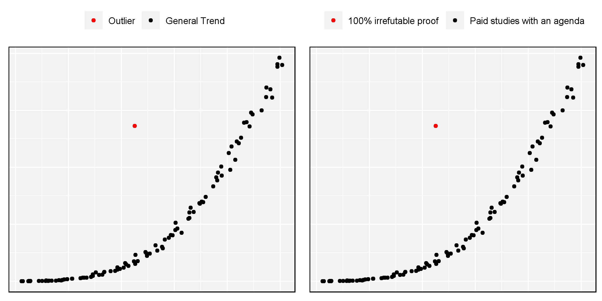
Environmentalists
mm <- meme_get("DistractedBf") %>%
meme_text_distbf(" virtue\n signalling",
"environmentalists",
"protecting the\nenvironemnt",
size = 30)
image_write(mm, "memes_03.png")
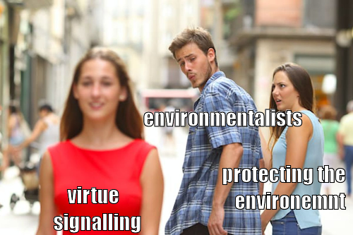
Ancient Aliens
mm <- meme_get("AncientAliens") %>%
meme_text_bottom("GMOs", size = 80)
image_write(mm, "memes_04.png")
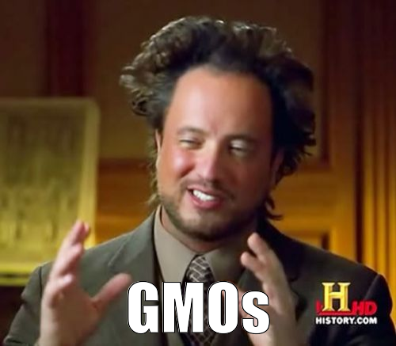
ggplot2
mm <- meme_get("PicardFacePalm") %>%
meme_text_top("When you see the ugly") %>%
meme_text_bottom("ggplot2 default colors")
image_write(mm, "memes_05.png")
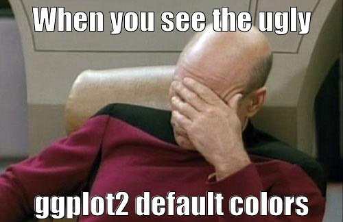
NonGMO Project
mm <- meme_get("ThinkAboutIt") %>%
meme_text_top("Not deceptive marketing", size = 35) %>%
meme_text_bottom("If you bribe the Non-GMO project", size = 35)
image_write(mm, "memes_06.png")
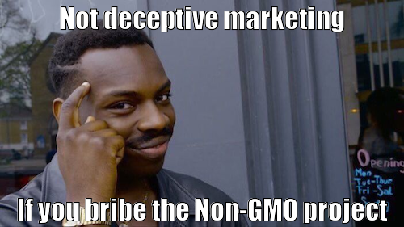
Darwin
mm <- image_read("input/darwin.jpg") %>%
meme_text_top("First person to document heterosis") %>%
meme_text_bottom("Married his cousin")
image_write(mm, "memes_07.png")

Montoya Meme
mm <- image_read("input/montoya_meme.jpg") %>%
meme_text_top("Science") %>%
meme_text_bottom("I dont think you\nknow what it means")
image_write(mm, "memes_08.png")

Sunset Meme
mm <- image_read("input/sunset.jpg") %>%
meme_text_top("if god doesn't exist,") %>%
meme_text_bottom("who the fuck painted this?")
image_write(mm, "memes_09.png")

Vavilov Memes
mm <- image_read("input/vavilov2.jpg") %>%
meme_text_top("Established the world's largest seedbank\nto help combat global food insecurity") %>%
meme_text_bottom("Died of starvation in a Siberian gulag")
image_write(mm, "memes_10.png")
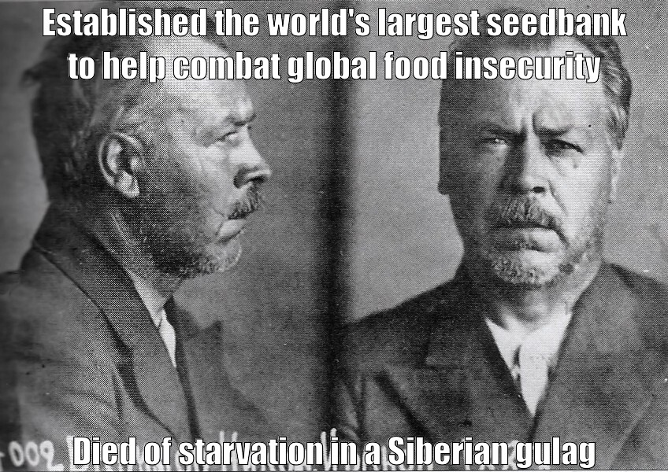
m1 <- image_read("input/vavilov1.jpg") %>%
meme_text_top("Vavilov") %>%
meme_text_bottom("Willing to die for his\nscientific beleifs")
m2 <- image_read("input/lysenko1.jpg") %>%
meme_text_top("Lysenko") %>%
meme_text_bottom("Willing to murder for his\nscientific beleifs")
image_write(m1, "input/memes_11_1.png")
image_write(m2, "input/memes_11_2.png")
mm <- image_append(c(
image_read("input/memes_11_1.png"),
image_read("input/memes_11_2.png")) )
image_write(mm, "memes_11.png")
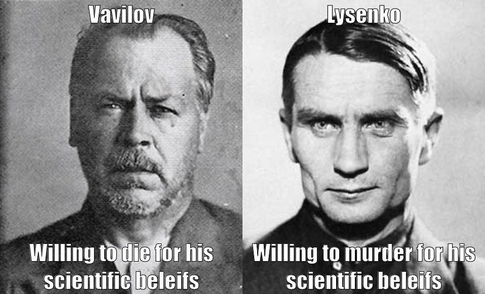
Borlaug Memes
mm <- image_read("input/borlaug.jpg") %>%
meme_text_top(" \n\n\n\n\n\nBelieve in science\nEven if it means feeding everyone") %>%
meme_text_bottom("just cross it")
image_write(mm, "memes_12.png")
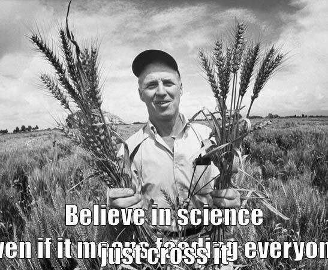
m1 <- image_read("input/malthus.jpg") %>%
meme_text_top("Malthus") %>%
meme_text_bottom("Worried population growth\nwould limit progress\ntowards utopia")
m2 <- image_read("input/borlaug_cropped.png") %>%
meme_text_top("Borlaug") %>%
meme_text_bottom("Worried about people\nstarving to death")
image_write(m1, "input/memes_13_1.png")
image_write(m2, "input/memes_13_2.png")
mm <- image_append(c(
image_read("input/memes_13_1.png"),
image_read("input/memes_13_2.png")) )
image_write(mm, "memes_13.png")
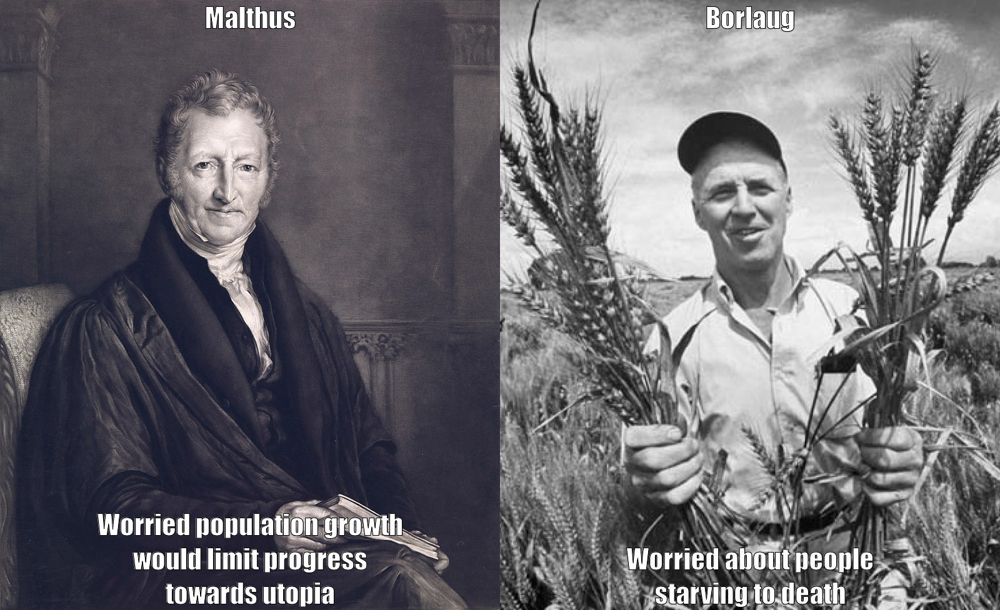
mm <- image_read("input/borlaug2.png") %>%
meme_text_top("paperwork!!!") %>%
meme_text_bottom("bureaucracy!!!")
image_write(mm, "memes_14.png")
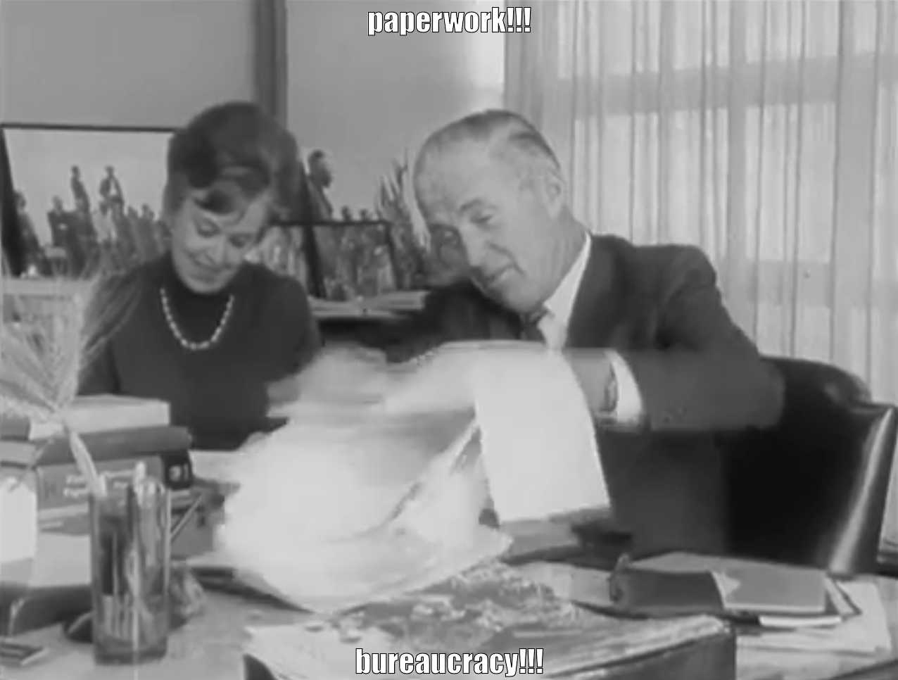
Red Army Activists
mm <- image_append(c(
image_scale(image_read("input/redarmy1.jpg"), "x600"),
image_read("input/redarmy2.jpg")))
image_write(mm, "input/redarmy.jpg")
mm <- image_read("input/redarmy.jpg") %>%
meme_text_top("when the activists find out") %>%
meme_text_bottom("you've been growing GMOs")
image_write(mm, "memes_15.png")
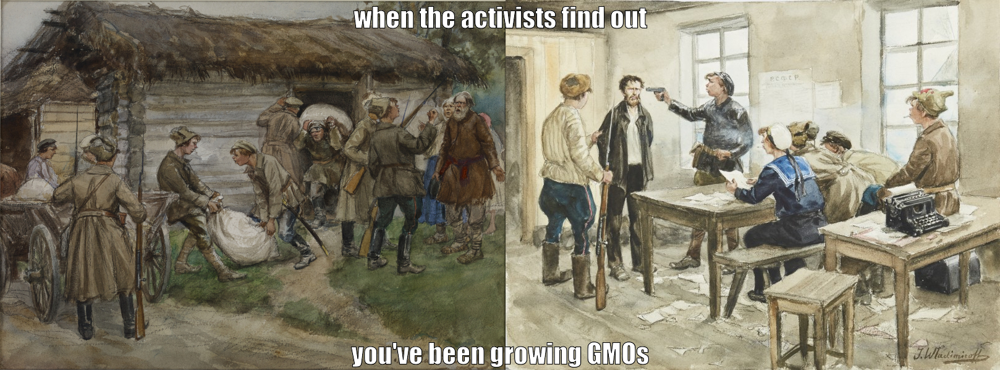
© Derek Michael Wright www.dblogr.com/